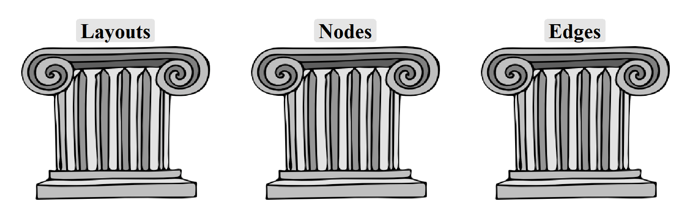
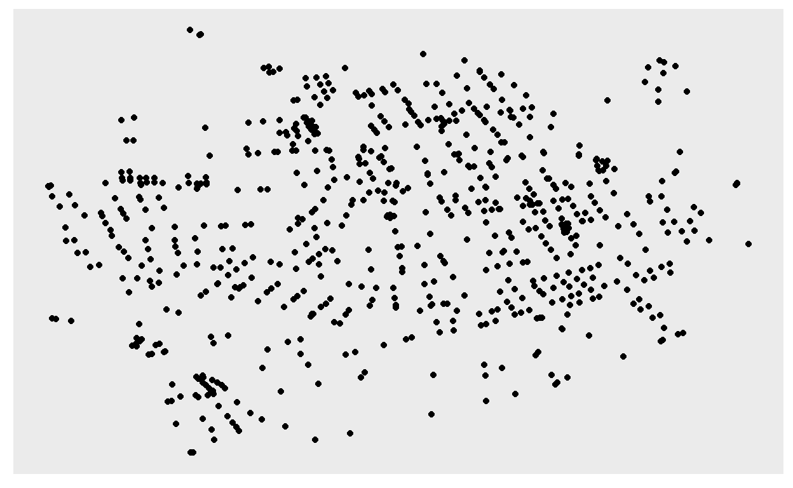
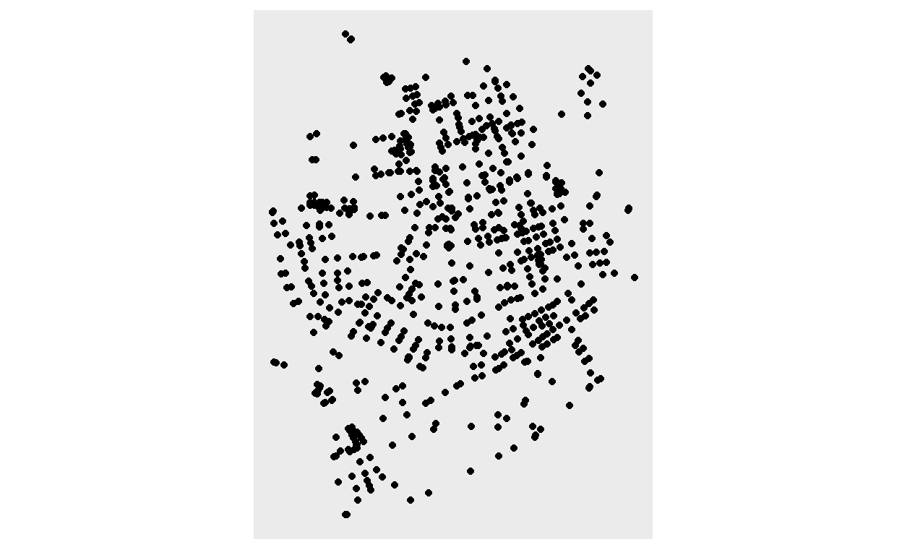
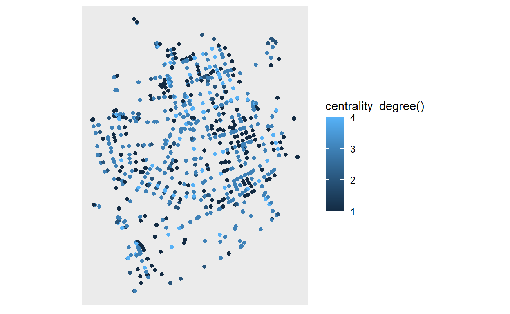
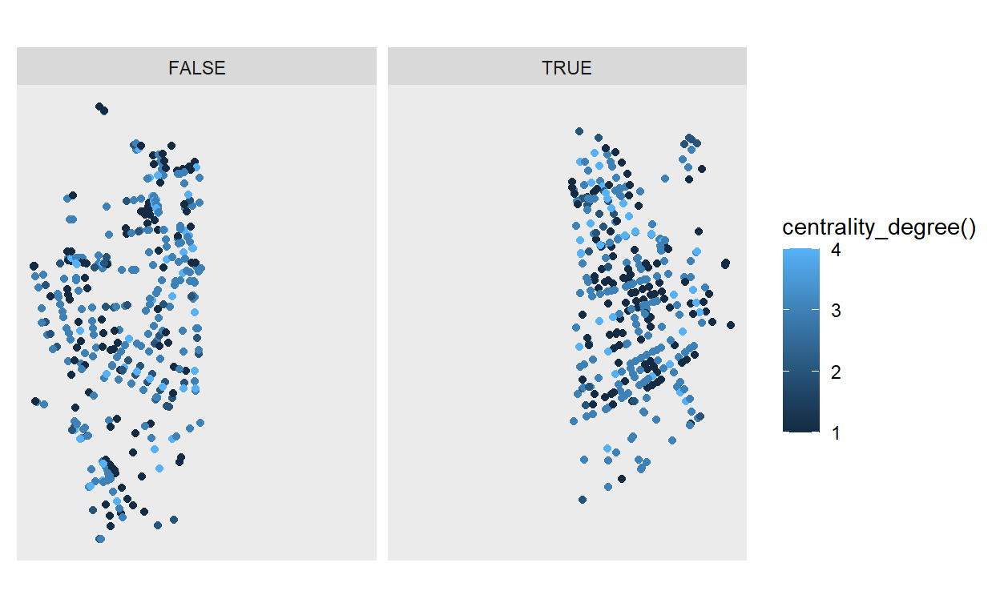
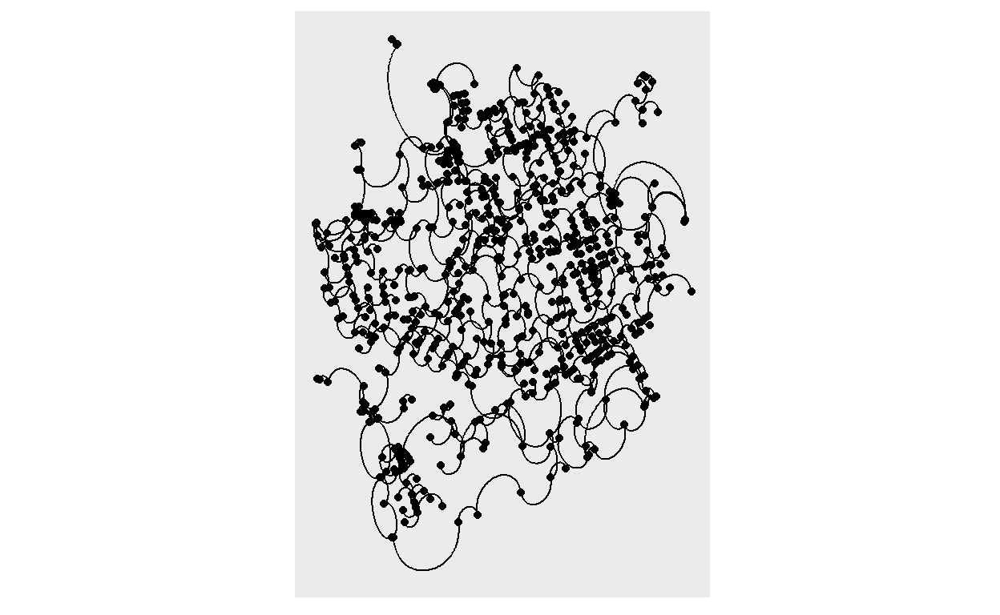
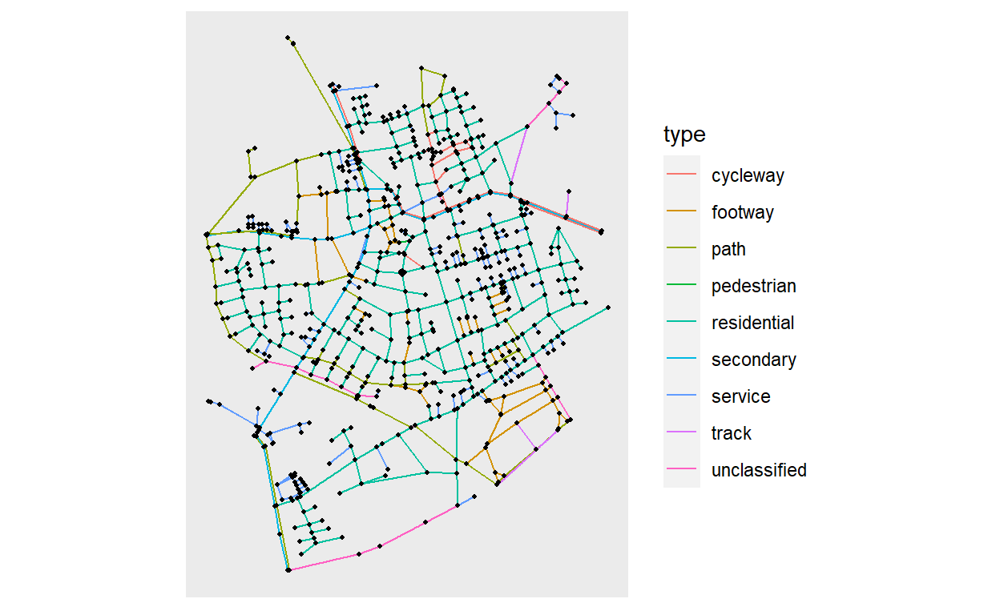
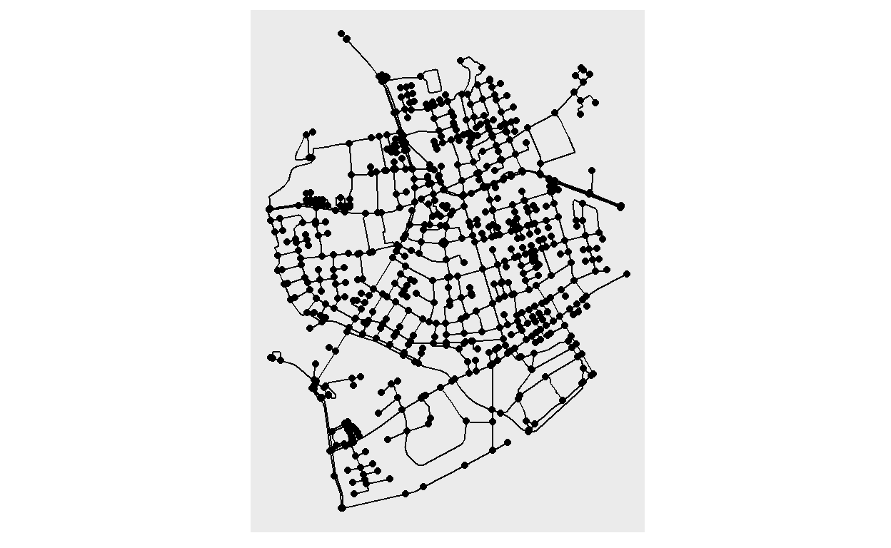
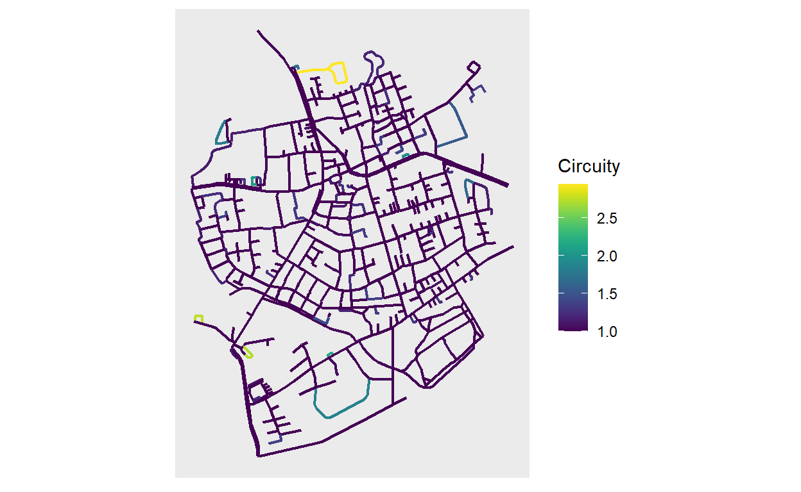
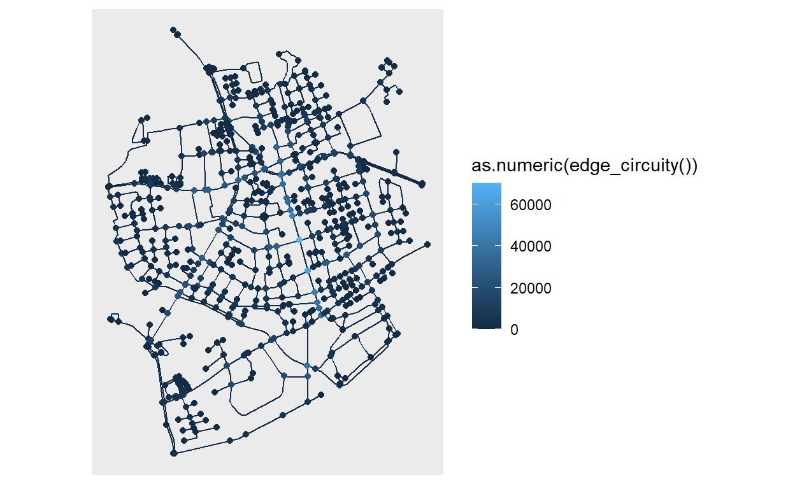

What is this about?
This post is to document my personal exploration on how to visualize spatial networks created with sfnetworks using ggraph. This all started with a sfnetworks hackathon and should end with a successful PR to ggraph.
I should start by saying, that it is probably a good idea to get familiar with ggraph (and tidygraph and sfnetworks while you are at it!) before going through this post.
If you are already a ggraph + tidygraph user and would like to apply the possibilities to the spatial domain, then this is definitely a resource for you and a good opportunity to learn about sfnetworks!
What can be done?
There are already several possibilities to use sfnetworks and ggraph together. Why? you may be wondering… well because ggraph was built as a way to visualize tbl_graphs from tidygraph, and guess what? sfnetwork sub-classes tbl_graph so basically you can do all sort of crazy graph representations with an sfnetwork already.
The real aim of this integration is to allow you to do all this crazy graph representations + graph representations in geographical space! Not everything is possible yet, and you will see below some limitations.
For now, I will illustrate how with the current status quo, we can already integrate sfnetworks and ggraph for spatial network visualizations. So let’s get started!
The Three Pillars
We need to start with three main concepts, the essential elements to create any ggraph visualization:

Layouts contain the vertical and horizontal placement of the nodes, giving them a physical placement. In spatial terms, they contain the coordinates of where each node should be mapped.
Nodes refer to which representation should the nodes have. And this really refers to which visual representation they should have, known in
ggplot2asgeom. Should they be points, tiles, voronoi polygons?ggraphcontains a large list of node representations viageom_node_*().Edges refer to the way nodes are connected between each other visually. Again here we are talking about
ggplot2geometries and thegeom_edge_*()functions should give you a big pool of options to represent this.
Let’s go through the possibilities to use these with sfnetworks also in these three steps.
1. layout_sf()
As mentioned before, a layout is basically the physical representation of where to place our nodes. The nice thing about ggraph, is that you can give your own customized layout.
In sfnetworks on the other hand, we have a spatial network consisting of nodes and edges. These interrelated objects are stored together as sf tibbles into an sfnetwork object. Since we have a nice integration with sf, we can extract the coordinates of our nodes as an X and Y list, which we can pass to ggraph. Let me give you a quick demo instead of all these words. I will illustrate this with the roxel dataset from sfnetworks.
library(sfnetworks)
library(sf)
(net = as_sfnetwork(roxel, directed = F))
# A sfnetwork with 701 nodes and 851 edges
#
# CRS: EPSG:4326
#
# An undirected multigraph with 14 components with spatially explicit edges
#
# Node Data: 701 x 1 (active)
# Geometry type: POINT
# Dimension: XY
# Bounding box: xmin: 7.522622 ymin: 51.94151 xmax: 7.546705 ymax:
# 51.9612
geometry
<POINT [°]>
1 (7.533722 51.95556)
2 (7.533461 51.95576)
3 (7.532442 51.95422)
4 (7.53209 51.95328)
5 (7.532709 51.95209)
6 (7.532869 51.95257)
# ... with 695 more rows
#
# Edge Data: 851 x 5
# Geometry type: LINESTRING
# Dimension: XY
# Bounding box: xmin: 7.522594 ymin: 51.94151 xmax: 7.546705 ymax:
# 51.9612
from to name type geometry
<int> <int> <chr> <fct> <LINESTRING [°]>
1 1 2 Havixbecke~ reside~ (7.533722 51.95556, 7.533461 51.955~
2 3 4 Pienersall~ second~ (7.532442 51.95422, 7.53236 51.9537~
3 5 6 Schulte-Be~ reside~ (7.532709 51.95209, 7.532823 51.952~
# ... with 848 more rows
net %>% st_coordinates() %>% head()
X Y
1 7.533722 51.95556
2 7.533461 51.95576
3 7.532442 51.95422
4 7.532090 51.95328
5 7.532709 51.95209
6 7.532869 51.95257Now, how do we create a layout that does this automatically? Well here is a little helper function that will take care of that for you. It will put the X and Y coordinates of any sfnetwork object passed to it.
layout_sf = function(graph){
# Extract X and Y coordinates from the nodes
graph = activate(graph, "nodes")
x = sf::st_coordinates(graph)[,"X"]
y = sf::st_coordinates(graph)[,"Y"]
data.frame(x, y)
}
How do we use it? Well, like this:
Yes! That’s it. You are probably looking now at a beautiful white canvas, but internally ggraph has already a plan for every node you will map next, let’s see it in action in the next step.
2. geom_node_*()
The most obvious way to represent a node in space is with a point. This is how we would do it if we were plotting POINT geometries in space. With ggraph we can get that representation with geom_node_point(). Note that other useful node representations in space might be using a label or text, we can achieve that with geom_node_label() and geom_node_text(), respectively.
Building on our previous plot:
ggraph(net, layout = layout_sf) +
geom_node_point()

Oh yes, there are our nodes! But wait… If you are familiar with the sfnetworks vignettes, you might be thinking: this looks distorted… and yes, it does.
Unfortunately, ggraph does not know about CRS so it will accommodate your X and Y axes to the size of your plot. This is one of the reasons why some internal tweaks are needed in ggraph to make this work better. But for now a way to go around this is to use coord_sf():
ggraph(net, layout = layout_sf) +
geom_node_point() +
coord_sf(crs = st_crs(net))

Much better. Now, our plot also takes into consideration the CRS and places our nodes properly.
Now let’s give some aesthetics to our plot. If you scroll back up, you will see that our nodes don’t have attributes, other than their geometry, so what should we look at? What about the degree centrality of the node? This will assign the count of the adjacent edges of each of our nodes. We can do this with centrality_degree() function in tidygraph.
A really nice feature about ggraph is that we don’t need to go back to our original graph, mutate our network, save as a new object, and then call it again inside ggraph(). We can just call the function directly inside the aes(), where the calculation will be done on the fly! Read more about it here!
library(tidygraph, warn.conflicts = F, quietly = T)
ggraph(net, layout = layout_sf) +
geom_node_point(aes(color = centrality_degree())) +
coord_sf(crs = st_crs(net))

Directly passing functions also works inside facet_*() functions. sfnetworks has a couple of functions that can be evaluated in this way. To illustrate we can use node_X, which gives us the X coordinate of the nodes.
ggraph(net, layout = layout_sf) +
geom_node_point(aes(color = centrality_degree())) +
coord_sf(crs = st_crs(net)) +
facet_nodes(~node_X() > 7.535)

OK, probably not a real world case scenario, but it gives an overview of what can be done!
Let’s move on to the final step, and connect these nodes to each other.
3. geom_edge_*()
Now comes the tricky part. When we are working with graph structures in, let’s call it, “abstract” space, the connections between the nodes is basically drawing a line between each pair. Although ggraph has quite a long list to represent edges (see here), the connections that I find most useful for spatial networks are geom_edge_link() and geom_edge_arc(), which create a straight line or an arc between connected nodes.
ggraph(net, layout_sf) +
geom_edge_arc() +
geom_node_point() +
coord_sf(crs = st_crs(net))

Yes, I bet you are thinking this could go to accidental aRt. This geom can come in handy for some data visualizations, you can see it in action at the end of this post!
But now let’s look at straight lines or links between our nodes. We can of course pass aesthetics to all the geom_edge_*() functions, which refer to edge attributes. Let’s color our edges by the type of road:
ggraph(net, layout_sf) +
geom_edge_link(aes(color = type)) +
geom_node_point(size = 0.75) +
coord_sf(crs = st_crs(net))

I know that for now you must be wondering: if we have a spatial set of edges with an explicit geometry, why are we just drawing plain lines? Well, remember I said this would be tricky? This is exactly what is missing from ggraph and the core of what I want to implement.
But, do not despair! I am here to show you some workarounds, not fully ideal but something to work with in the meantime. Let’s remember that ggraph subclasses a ggplot object, so we can combine ggplot2 functions, and any other package that extends the grammar of graphics.
We will resort to geom_sf() for now. We can plot the edges of our network, by extracting them as an sf object with the function st_as_sf(). We have implemented a shortcut that allows you to choose which element of the network (nodes or edges), you want to extract.
ggraph(net, layout = layout_sf) +
geom_sf(data = st_as_sf(net, "edges")) +
geom_node_point() +
coord_sf(crs = st_crs(net))

And there we go, a nice representation of a geospatial network! We can of course pass some aesthetics as well, for example an spatial edge predicate implemented in sfnetworks: edge_circuity(). You will see now that we can pass this predicates directly to the aesthetics inside geom_sf() and since our main object is a ggraph this expression will be evaluated in the network, pretty exciting!!
ggraph(net, layout = layout_sf) +
geom_sf(
data = st_as_sf(net, "edges"), size = 0.8,
aes(color = as.numeric(edge_circuity()))
) +
scale_color_viridis("Circuity") +
coord_sf(crs = st_crs(net))

And there you have it, a swift overview of how to use ggraph and sfnetworks together.
What can’t be done?
So yes, a lot can be done already, but as you may have noticed, there are certain things that just don’t work yet with the current ggraph implementation. Here is a not at all comprehensive list of things that need some work:
- The
layout_sf()function I showed you above will not work when there are columns namedxory. ggraph()does not consider the network CRS.- There is no way yet to plot spatially explicit edges inside ggraph.
This last one comes with a couple more problems:
Multiple scales for the same aesthetic
With ggraph one can give “color”, “fill”, “size”, etc. aesthetics to both the nodes and the edges. In our current workaround this is not working so good. The plot will get rendered properly with the corresponding colors, but the legend does not know what to do, and will only use one of the scale elements, without a warning!
ggraph(net, layout = layout_sf) +
geom_sf(data = st_as_sf(net, "edges"), aes(color = as.numeric(edge_circuity()))) +
geom_node_point(aes(color = centrality_betweenness())) +
coord_sf(crs = st_crs(net))

Faceting edges
Another missing stone is faceting by edges. This currently gives an error:
ggraph(net, layout = layout_sf) +
geom_sf(data = st_as_sf(net, "edges")) +
facet_edges(~type)
Error in seq_len(length(data) - 1): argument must be coercible to non-negative integerWhat to do then? Remember that I mention a PR? Well, I am working there to fix these issues, some of them already have a fix, others don’t. I would certainly appreciate any help I can get. I opened an issue to illustrate the progress of my PR. Basically I am stuck with understanding ggproto objects to allow an integration of edges in geographical space.
If you feel like exploring what I have got so far, install ggraph from my forked repo. Beware, this will replace the original ggraph, so do this under your own risk.
remotes::install_github("loreabad6/ggraph")
Show me more!
While testing my ggraph implementation, I started looking for some spatial network visualization examples done with R that I could recreate with my code. Here I will keep adding what I come up with. Bear in mind that most of these examples are created with remotes::install_github("loreabad6/ggraph").
Break Free from Plastic
For week 5 of 2021 in the Tidy Tuesday weekly data project, we analyzed data from the “Break Free from Plastic” initiative. Here is a step by step guide on how to recreate the final plot.

Airports in the U.S.
This example is inspired on this wonderful blogpost on Network Visualization, where I tried to recreate the last plot showing airport connections and visitors in the U.S. Here is the code to reproduce.